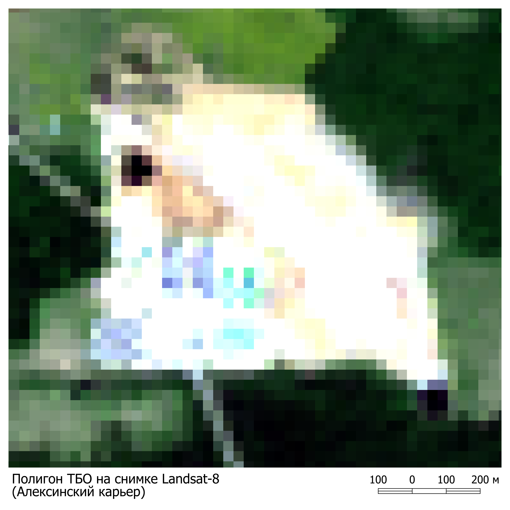

Горно-обогатительные комбинатыГо́рно-обогати́тельный комбина́т (сокращённо ГОК) — комплексное горное предприятие по добыче и переработке твёрдых полезных ископаемых. Необходимость в строительстве на одной производственной площадке производственных переделов не только по добыче, но и по переработке и обогащению добываемых из недр полезных ископаемых, возникла в связи с тем, что для дальнейшего использования полезных ископаемых необходимо повысить в них содержание полезных компонентов. |

|
ТБОПолигоны ТБО – площадки для временного хранения, безопасной утилизации твердых бытовых отходов. Они необходимы в каждом регионе. Их количество, площадь определяются плотностью заселенности и числом предприятий. |
|  |
МесторожденияОписание категории "Месторождения". Например, информация о местоположении и значимости месторождений. |

|